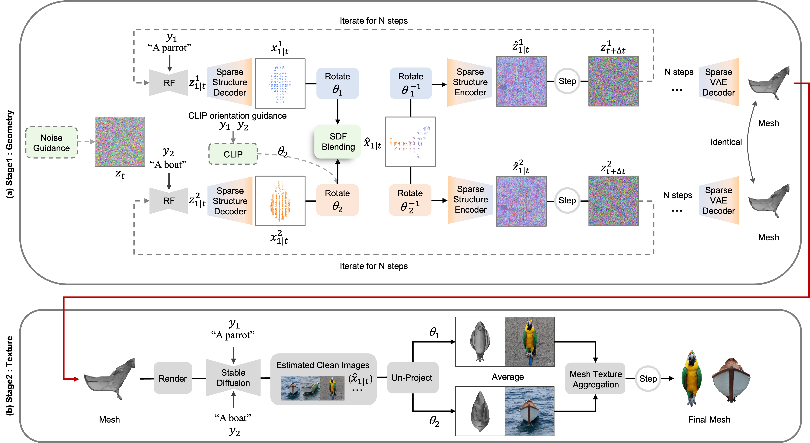

Main video: add a <source> inside this element when the asset is ready.
Creating 3D visual illusions—a single 3D mesh that reveals entirely different semantics from various viewing angles—is a fascinating but tough challenge. Existing optimization-based methods are slow and can produce oversaturated colors. In contrast, naive stitching approaches fail to produce geometrically coherent objects. This results in visible unnatural seams and semantic leaks.
In this paper, we present a fast and training-free framework for generating text-driven 3D visual illusions. Our approach decouples the generation into two stages. First, we propose a cross-space dual-branch denoising process. This process dynamically decodes 3D latents into voxel space for CLIP-guided orientation alignment and Signed Distance Field (SDF) blending, which ensures seamless geometric fusion. Second, we introduce a view-conditioned texture synthesis module that projects and aggregates view-specific 2D diffusion priors onto the fused geometry.
Extensive experiments demonstrate that our method generates highly realistic, dual-semantic 3D illusions in just 3–5 minutes. It significantly outperforms existing methods in geometric integrity, semantic recognizability, and efficiency.

Pipeline overview. (a) Stage 1 employs dual-branch denoising. At each step, latents are decoded to voxel space, rotation-aligned, and fused via SDF blending (see supplementary figure), then re-encoded to continue denoising, producing a single unified 3D mesh. (b) Stage 2 applies view-conditioned texturing to the fused mesh. Estimated clean images x̂1|t are predicted via Stable Diffusion, un-projected from viewpoints θ1 and θ2, and iteratively aggregated via mesh texture aggregation, producing a single object with distinct semantics at each target viewpoint.
Illusions where viewpoint discovery is guided by CLIP; the mesh is interpreted as different objects under rotating cameras.
Two-phase illusions with a fixed viewpoint schedule; geometry stays shared while semantics flip between prompts.
Three-way compositions: the same surface supports three distinct readings from different viewing regions.